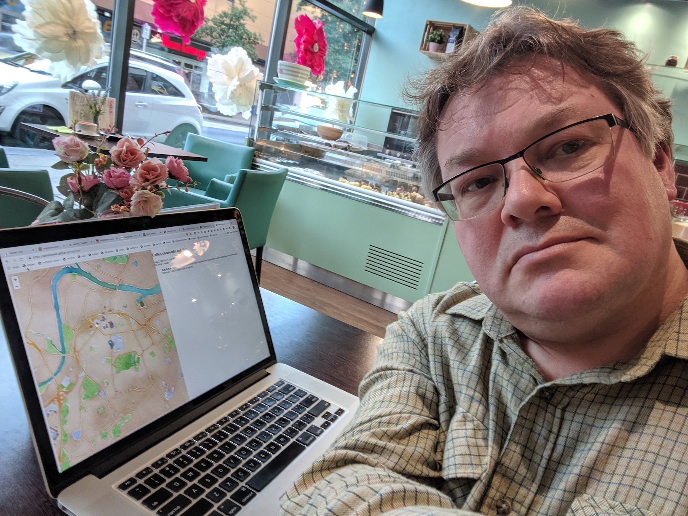

Homebrew Website Club Teesside
I haven't done much with my own site recently - I still have a hosted notes site at known.kevinmarks.com and haven't taken on moving it to somehting I control
thinking about the problem of link decay - as Tim Berners-Lee said, "eventually every URL ends up as a porn site". http://www.kevinmarks.com/fragmentions.html
even the venerable http://gmpg.org/ has got flaky, though Zegnat has been reconstructing it from archive.org https://zegnat.github.io/html-gmpgdotorg/
@baekdal looked into the link decay problem for his own site and found a lot of missing links, but he also built an interstitial to redirect ot archive.org https://baekdal.com/trends/publishers-need-to-think-about-linkjacking-too/
this suggests that good practice would be to always ping archive.org to stash pages when you link to them. This is something I do at https://mention.tech when sending webmentions - I archive both the links involved too.
But maybe we could do more - store a hash of the page as we saw it, and compare that with what is seen when viewed? Use the original link by default, switch to archive when we know it is bad, or after 3 months?
for the GMPG case, there's an issue here: https://github.com/Zegnat/html-gmpgdotorg/issues/1
trying out owning my own locations - it's really not much code to to do maps these days https://kevinmarks.github.io/maptime/ (inspiration from @AndrewJohnMarks and @ChristophaMarks